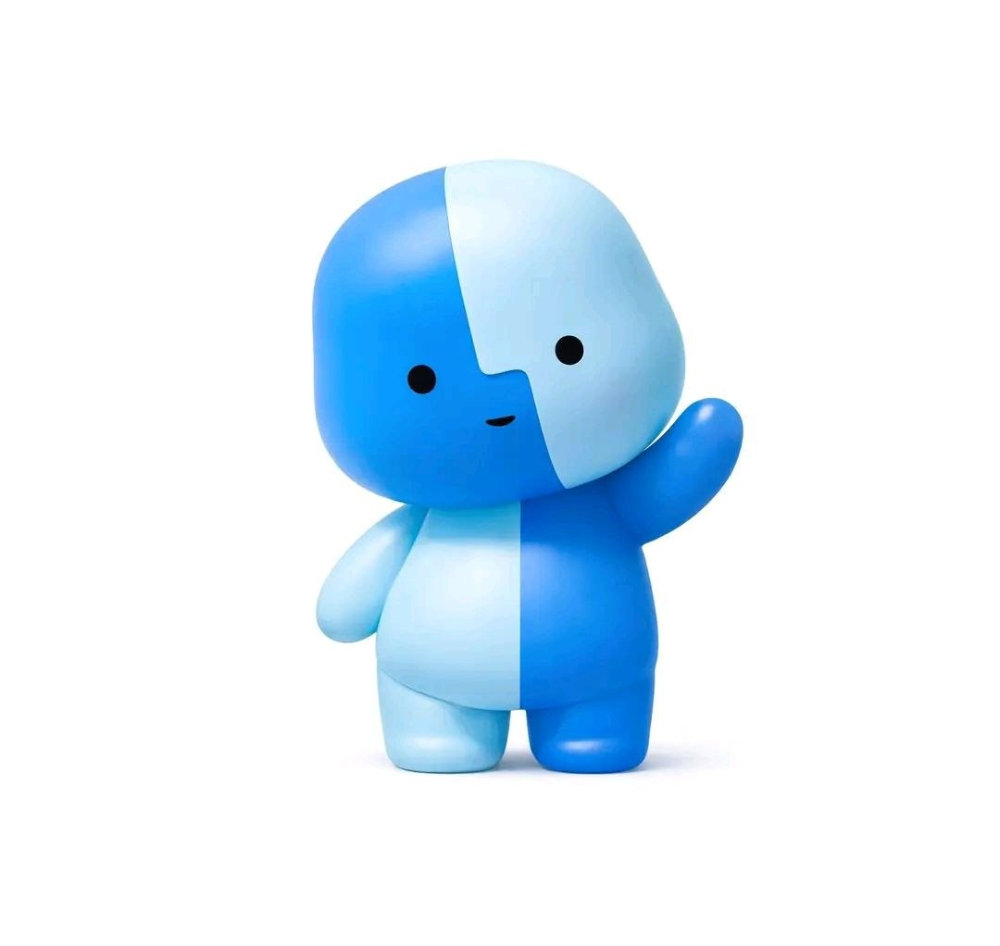
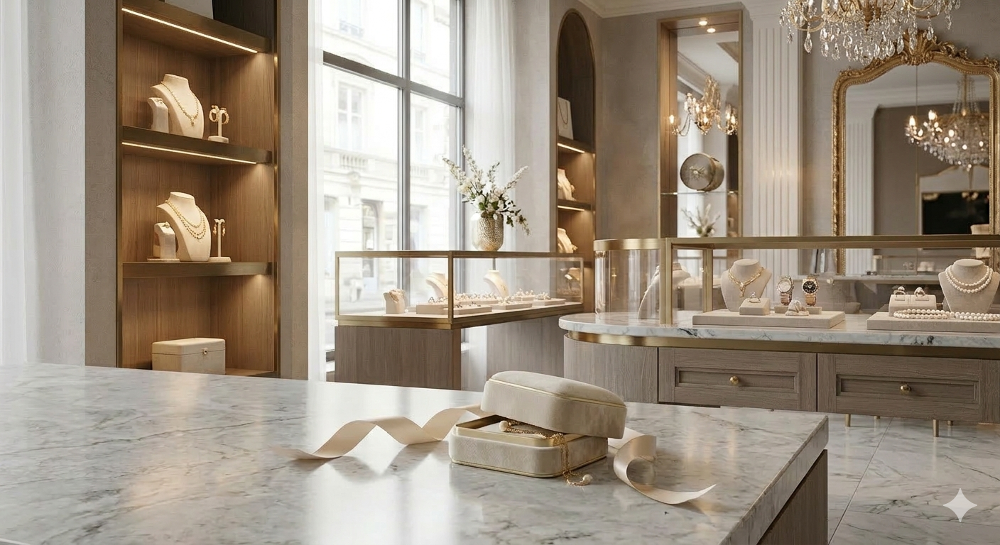

Luxury brand positioning
A strong opening statement and refined presentation establish the brand's premium jewellery direction.

DAVIS KWAME BAAKOA luxury jewellery storefront designed with What's App integeration. The site spotlights a featured piece and communicate the story behind its collection.
Visit live website
Treasures Collection is presented as a luxury jewellery brand based in Accra. The brand needed an on-line identity and shopping-oriented experience that communicates craftsmanship, product details and the meaning behind the brand.
The live experience leads with the brand promise, highlights a featured men's goldbar bracelet, shares product material details and tells the story behind the Treasures promise.
This project is presented as a website design and development project. Its current portfolio story focuses on the live website and the customer-facing experience visible on the site.
A strong opening statement and refined presentation establish the brand's premium jewellery direction.
The men's goldbar bracelet receives a dedicated spotlight with descriptive product details.
Material, bead and origin details help visitors understand the featured piece.
Enables swift enquires , customization and smooth shopping experince.
The website is live and can be explored using the link above. Search Console, Google Analytics, email capture and other marketing integrations are not being claimed for this project at this stage. They will be implemented upon clients request.